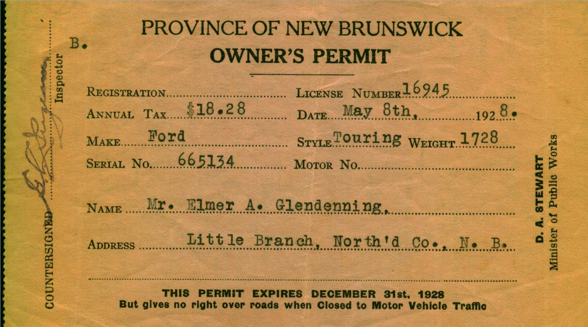

The Family Chronicle
No. 55 December 20, 2003
________________


Dad purchased a Model T. Ford, year unknown, but Lillian (Weeks) Glendenning thought that he had purchased it from MacLennan’s Garage in Chatham (At the corner of the Park). Lillian remembered that the salesman let Grace tryout the car before Dad bought it. Sometime after 1931 he purchased a 1929 Model A 2-door Sedan – purchased, I believe, from the Babineau sisters (The Babineau's operated the movie theatre in Chatham.) According to both Walter and Lillian, the car was purchased on the day that Annie MacDougall died.
Walter worked with Dad cutting wood up Bay du Vin River to earn money to buy one of the cars; I cannot recall which one. Shown above are the 1928 registrations for the Model T Ford and in 1938 for the Model A. Ford Thanks to Lillian (Glendenning) Murray for access to the original documents.
The gas tank for the Model A, and perhaps for the Model T, was just in front of the windshield and gas flowed by gravity to the engine. On very steep hills, the Tabisintac for example, the car had to be turned around and driven backward up the hill. . Dad upset the Model T at Gilberts Corner, near Shediac, the day he brought Grace home from business college. The Model A sat in the old wagon shed, presumably because of the recession. Walter said that Dad allowed $2.00 worth of gas each week but I do not recall for what year. Gas pumps of the day were pumped by hand to fill a chamber at the top of the pump. The gas then flowed by gravity through the hose to the gas tank on a car.
School Lunches
I seldom was able to take a lunch to school
but Arbour Day was an exception. Mum packed a lunch in a 5-pound Dominion shortening pail – red with yellow lettering as I recall. (Some homes used Crisco but we always used Dominion shortening) I cannot recall the kind of sandwiches but I do remember the bottle of milk. Mum used an empty vanilla bottle – the large one. At school, I took a piece of string and tied it to the neck of the bottle. Then the bottle was taken to a spot under the Miller’s Bridge and left in the cold brook until lunchtime. I must have tied the bottle to a nail or perhaps to a rock. The milk was ooh so cold and tasted so good. You must remember that we did not have a refrigerator at that time so our milk at home was kept cold by keeping it in the basement.
Dumfriesshire, Scotland
My great Grandfather, John Glendinning, was born in Callister Hall in Dumfriesshire, Scotland in 1807. He came to New Brunswick in 1830. Bartholemew’s Gazetteer of the British Isles, 1887, described Dumfriesshire as follows:
DUMFRIESSHIRE, maritime co., on S. border of Scotland; adjoins the cos. Of Lanark, Peebles and Selkirk on the N., and on the South is washed by the Solway Firth; extends about 53 miles NW. and SE, between Ayrshire and Cumberland, and about 32 miles NE. and SW. between Roxburghshire and Kircudbrightshire; a coast-line about 20 miles; area, 680,217 ac., pop. 76,140, or 72 persons to each sq. mile. The surface generally is bare and hilly. The dales of the Nith, Annan, and Esk, however, are rich in beauty, and contain fine holms for pasture and some good arable land. The rivers are numerous, and yield splendid salmon and trout fishing. The coast and S. region is low and sandy; much of it is covered with morass, and lochs are numerous around Lockerbie; but there is also much good corn-growing land. The Lowther or Lead Hills along the N. boundary are upwards of 2000 ft. in height, and abound in lead ore. These and other hills round the borders are mostly smooth in outline, and afford excellent pasturage. Red sandstone is a prevailing rock, and limestone, coal, and lead are worked.”
George Watling
While reminiscing recently with George Watling, he reminded me of an occasion when he and I were at Walter’s place across from the Presbyterian Church (The former Dan MacLean property.). Readers who know the area will remember the long lane and the high bridge over the brook. It was a hot summer day and we were playing in the brook – stark naked. (I do not ever remember having a bathing suit when I was young even when we swam at our shore.) Anyway, we were enjoying ourselves until we spotted Kate MacLean walking in the lane with Ian and Allistair Morrison. Needless to say, we scampered for cover. (Rev. Morrison was the United Church Minister at the time. Ian was my age; Allistair was a year or two older. Wonder what ever became of them? )
Watling Connections to PEI
Family lore states that Jubal Watling came to New Brunswick via Prince Edward Island. A search of the records in PEI located a Jubal Watling who had moved to PEI from Norfolk, England and settled on Lot 52. The PEI Jubal married Louisa ? on July 14, 1831; both had emigrated to Canada.
It is not impossible that the two are one and the same but I think not. Even if one speculates that Susan Leach died in England, ages and place of birth of children doesn’t fit. I’m not ruling it out but need more information to be certain.
Another possibility is that our Jubal came to visit some cousins on PEI and then decided to move to New Brunswick to secure work with the booming lumber industry in the Miramichi. That is what brought others to the area including , I was told, the MacKenzies, Andersons and Allens who settled on the upper reaches of the Little Black River.
The Chronicle is an occasional newsletter published by Don Glendenning It is designed to share information about my family, community and the times in which I grew up. While every effort is made to be accurate, errors are likely to occur. Comments, enquiries and information may be sent to 62 Queen Elizabeth Drive, Charlottetown, PEI, C1A 3A9. Tel: 902-892-5859 Email: dglende @attglobal.net. Feel free to make and pass along copies of this newsletter.